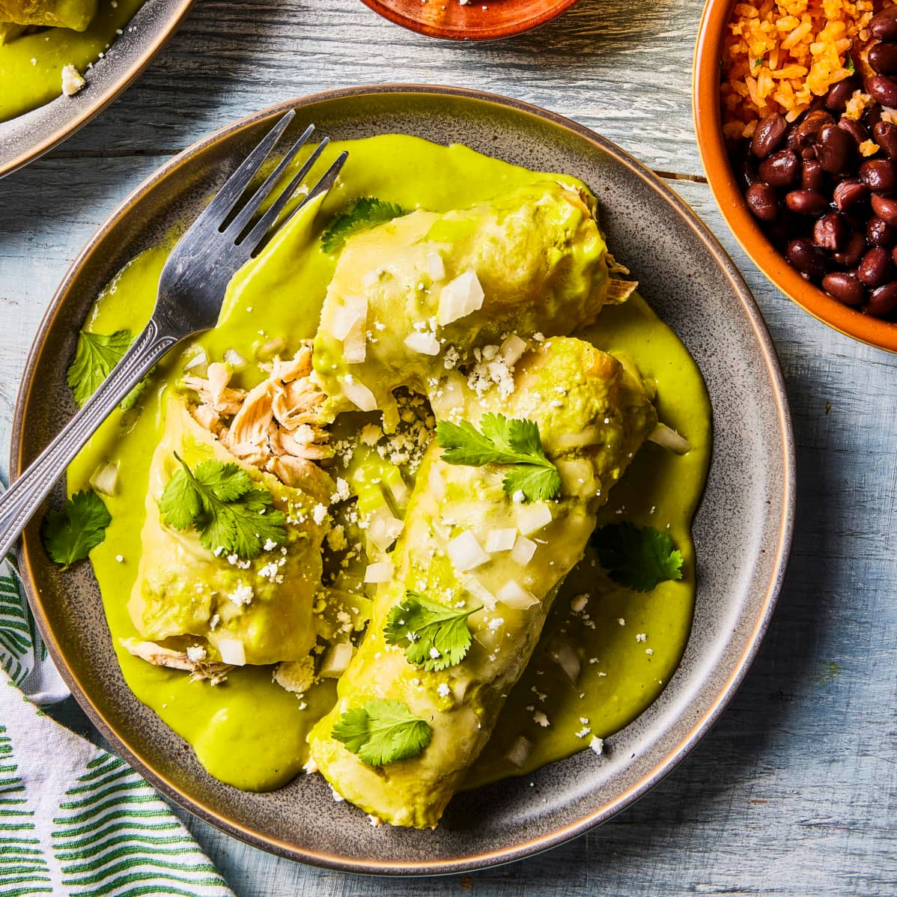

Home(Casa)
Document
Enchiladas Suízas de Pollo 🐔🍗

Enchiladas Suizas, a classic Mexico City dish, features chicken enchiladas in a creamy, tangy tomatillo and chile sauce topped with melted cheese.
We quickly poached strips of boneless chicken in broth (heavy on Knorr Pollo) for tender, juicy meat seasoned with black pepper and Mexican oregano.
The sauce combines simmered tomatillos, onion, garlic, and serrano chiles, blended with cilantro and crema Salvadoreña for freshness and richness.
Lightly frying corn tortillas made them pliable and resistant to moisture. After rolling, the enchiladas were sauced, topped with cheese, and briefly cooked in the same skillet, with extra sauce served on the side.
Ingredients
- Chicken - 1 pound boneless, skinless chicken breasts, trimmed and cut lengthwise into thirds
- 2 garlic cloves, peeled
- 2 bay leaves
- 3/4 teaspoon table salt
- 1/4 teaspoon table salt
- Sauce: 3 Serrano chiles (burned and peel skin off), 1 white onion, 1 pound tomatillos, 2 garlic cloves, cilantro, 1/2 teaspoon table salt, 1/2 crema salvadoreña